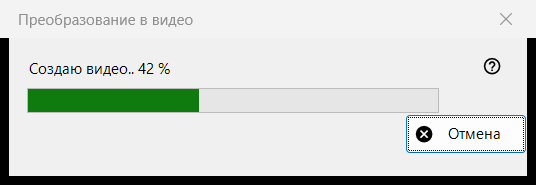
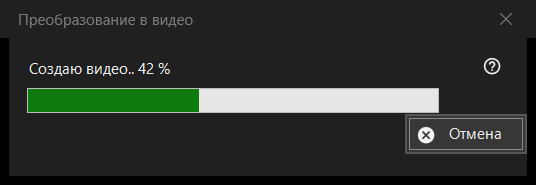

Преобразование в видео
Назначение
Окно хода работы команды «Преобразовать в видео»: оно превращает анимированный GIF, WebP или APNG в MP4 и затем удаляет оригинал. Оно открывается после подтверждения преобразования, остаётся поверх просмотрщика до конца работы и содержит одну кнопку - «Отмена».


Порядок действий
- Покажите анимированную картинку.
- Выберите «Преобразовать в видео..» в меню картинки или нажмите кнопку «Преобразовать в видео» на панели инструментов; обе есть, только пока на экране анимация, а клавиши для команды нет.
- Прочитайте подтверждение и нажмите «Преобразовать».
- Если предложат загрузить FFmpeg, ответьте «Да».
- Следите за полосой или нажмите «Отмена».
- Просмотрщик откроет новый MP4.
Элементы окна
Запуск преобразования
Команда предлагается только для анимации, никогда для неподвижной картинки или видео, а для защищённого контейнера и места, куда рядом с файлом ничего нельзя записать, просмотрщик её отклоняет. Когда работа начинается, воспроизведение останавливается.
Подтверждение
Текст: оригинал будет преобразован в новый MP4, а оригинал будет удалён безвозвратно, минуя Корзину. Если у анимации есть прозрачность, добавляется: «Прозрачность будет залита чёрным.» Ответ по умолчанию - «Отмена». Флажок «Не спрашивать до закрытия программы» действует только до закрытия просмотрщика и нигде не сохраняется.
FFmpeg
Преобразование использует FFmpeg, которого в программе нет. Если его нет на компьютере, один раз спросят о загрузке (размер указан в вопросе; файл берётся с сайта проекта, сохраняется локально и является свободной программой под лицензией GPL). Ответ «Нет» останавливает работу здесь: ничего не создаётся и не удаляется.
Окно хода работы
Подпись «Создаю видео..» с процентом, под ней полоса. Если длина анимации неизвестна, полоса просто бегает туда-сюда, без числа. «Отмена», клавиша Esc и кнопка закрытия означают одно и то же: окно остаётся ещё на миг, пока кодировщик действительно не остановится, затем закрывается, а просмотрщик сообщает «Преобразование отменено». Пока идёт работа, просмотрщиком пользоваться нельзя.
Что получится
MP4 в той же папке с тем же именем (если имя занято, добавляется номер в скобках), с частотой кадров анимации, от 1 до 50 кадров в секунду. Файл пишется под временным именем и переименовывается, когда готов. Оригинал удаляется только после того, как MP4 появился под своим именем и проверка показала, что в нём вся анимация. Строка состояния пишет «Готово», и просмотрщик показывает видео.
Если что-то пошло не так
Оригинал остаётся, а строка состояния называет причину: «Не удалось создать видео» с пояснением, «Видео создано, но не удалось удалить оригинал» или «Видео создано, но его полноту не удалось проверить - оригинал сохранён». Неудачный запуск не трогает оригинал, удаляет временный файл и записывает подробности в журнал.